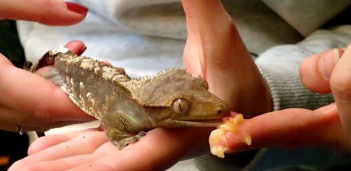

En esta interacción se comparte espacio y tiempo con los reptiles, anfibios y artrópodos de Naturaleza Misteriosa. Se observa cómo comen los caimanes, serpientes, camaleones, varanos y tortugas. Durante alrededor de una hora, los responsables de los animales realizan un recorrido guiado en el que se ver cómo entrenan a los varanos, que salen de su instalación para cazar. Se ven muy de cerca los caimanes enanos del Amazonas y se conocen de cerca los mecanismos de caza de las tortugas. Al final, se enseña a los asistentes a coger una tarántula, una serpiente y un camaleón con sus propias manos. Eso sí que nunca lo olvidan.